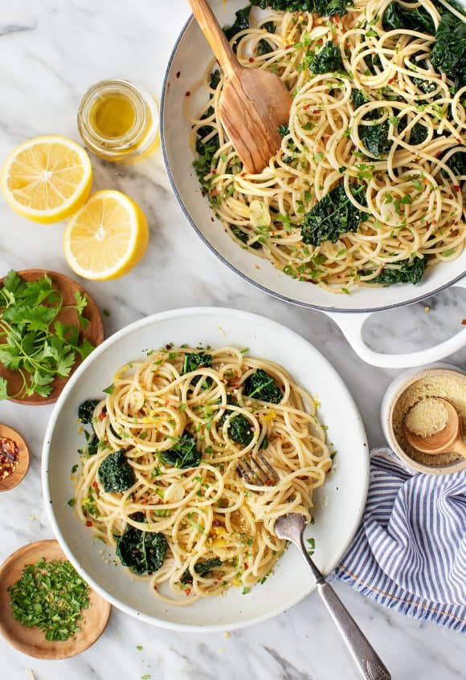

Pasta Aglio e Olio Recipe

Pasta Aglio e Olio - yummy!
Description
Pasta aglio e olio is an Italian dish of spaghetti in a garlic oil sauce, topped with parsley and lemon.
The dish is fast and easy to make, and is a great, light, flavorful meal.
Ingredients
- Spaghetti
- Garlic
- Olive oil
- Red pepper flakes
- Parsley
- Lemon
Steps
- Boil spaghetti in salted water
- Heat olive oil in pan
- Slice garlic
- Put sliced garlic into heated oil
- As garlic browns, chop parsley
- Drain pasta, saving cup of pasta water
- Add red pepper flakes to oil
- Transfer pasta to oil mixture, toss to coat it
- Add pasta water for more cohesive sauce
- Top with chopped parsley and lemon juice
- Bon appetit!
Home